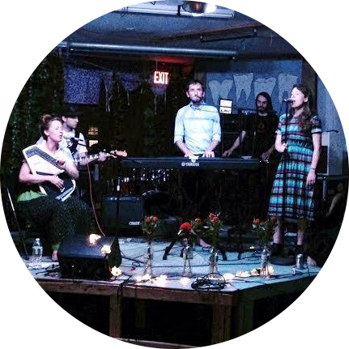
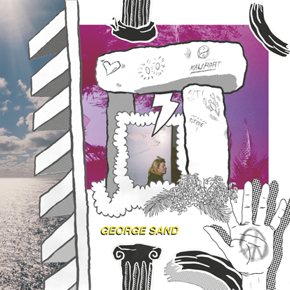
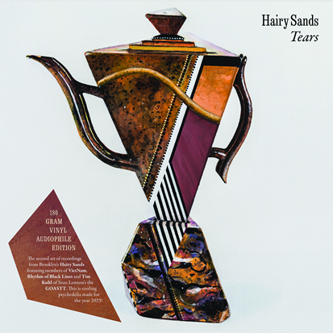

George Sand ♦ Hairy Sands
Europe Tour 2014
- Oct 19 - Paris (tbd)
- Oct 20 - Brussels (tbd)
- Oct 21 - 23.10 France / Belgium (tbd)
- Oct 23 - Berlin @ Little Stage
- Oct 24 - Berlin @ Madame Claude's
- Nov 1 - Pontevedra, Spain @ Bar Labranza
- Nov 3 - Tarbes, France @ Celtic Pub
George Sand
Featuring Jay Pluck of Ed Askew Band + modern hymns + downtown Manhattan

Bio
... strange, minimalist keyboard band... Jay Pluck has obviously had some immersion in Philip Glass: there's a hypnotic aspect to this music, but it's more raw and ragged and gently, methodically disquieting. Think of the creepy cinematics of In the Summer House and you'll be on the right track. All of the songs are working subtle, precisely articulated variations on broken chords, with an uneasy, modal melodic sense... (and) feature nebulously ominous guy/girl harmonies. -- New York Music Daily
Releases on Flying Moonlight
Caroline EP - Fall 2014

Recorded by Davey Jewell.
Links
Video
Press
Social Media
FacebookHairy Sands
Featuring members of Rhythm of Black Lines + VietNam and Tim Kuhl of Sean Lennon's GOASTT.

Bio
The music of Hairy Sands arrives at once from the past and the future. You can hear influences as vast as England's Canterbury scene, Tropicalia, Krautrock, and Texas psychedelia, as well as trace amounts of more experimental sources of inspiration. But the future is found by burrowing into the intricate guitar, layered harmonies, polyrhythmic bass and piano, and keenly within the act of practicing extreme restraint at one moment while revealing complexity and grandeur at the next. They decorate song with impressionistic lyrics revolving around nature, fiction and dreams.
Releases on Flying Moonlight
Tears LP - Released Fall 2014

Recorded by Hairy Sands and Matt Boynton of Vacation Island Recording.
Links
Video
Press
A crazy diamond from the NYC underground: Hairy Sands